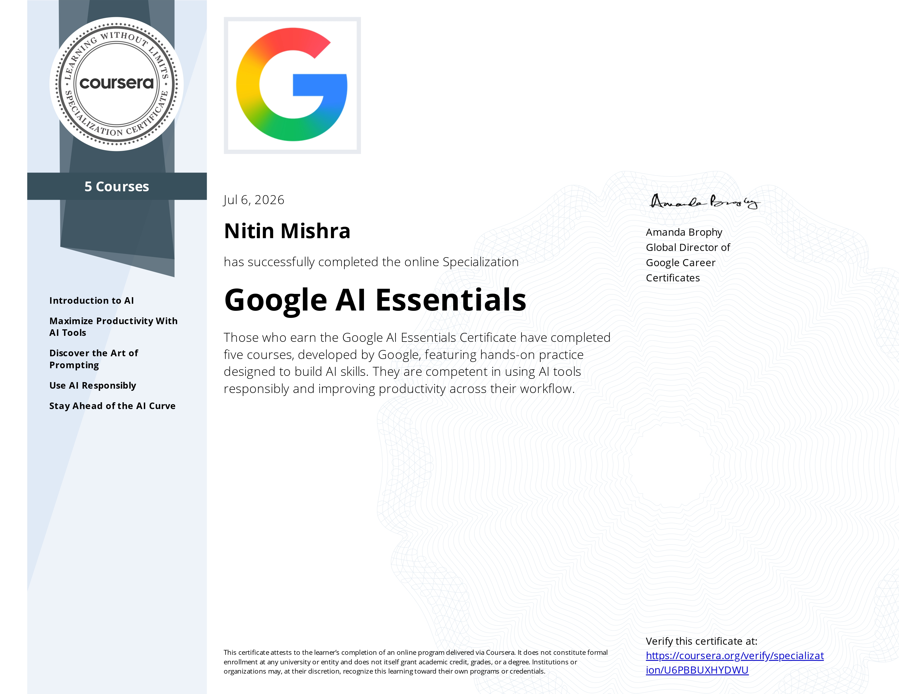

Hi, I’m Nitin Mishra.
I Build Structured Automation Systems With Operational Clarity.
I focus on building structured automation systems that help businesses reduce manual work and improve execution clarity. I didn’t start by learning automation tools; I started by noticing how subtle gaps compound over time.
When leads go untracked and follow-ups break, critical context is lost between systems and teams. This realization pushed me toward workflow planning, CRM structure, lifecycle logic, and operational automation to ensure reliable lead movement and pipeline consistency.
Why Businesses Lose Momentum
Capturing leads properly, organizing workflows, reducing manual breakdowns, improving follow-up continuity, and helping businesses move from reactive handling toward more structured operations.
Most of the systems I build are focused on solving real, compounding operational friction. I design solutions that bridge lead movement, CRM pipelines, and automated follow-ups so that no prospect falls through the cracks due to team fatigue or administrative friction.
By mapping exact lifecycle pathways, we turn fragmented day-to-day handling into structured, repeatable operational flows.
Structure is the Only Thing that Scales
“Good systems should feel clear, reliable, scalable, and operationally calm - not complicated for the sake of looking advanced.”
Believable Systems Over Hype
I don’t position myself as a guru, agency empire, or enterprise consultant. I prefer structured thinking, practical implementation, believable systems, operational clarity, and long-term credibility over complex, overengineered software structures.
Continuity and Integrity
Today, I focus on building structured lead capture, qualification, routing, follow-up, and lifecycle systems designed to reduce operational chaos and improve continuity across your CRM and automation tech stack.
Current Focus & Growth
I’m still actively growing toward deeper systems design and operational maturity. Good systems should grow organically and scale securely as service businesses and B2B environments expand.
My background combines automation workflows, CRM thinking, intake systems, operational structure, frontend systems, lifecycle logic, and implementation-focused problem solving.
Reusable Automation Modules
Developing reusable automation frameworks that can scale across service businesses and B2B environments.
Portfolio Systems & Mapping
Building portfolio-grade systems and documenting workflows to systematically refine operational thinking.
Platform Stack Integration
Integrating tools like Make.com, Zapier, HubSpot, GoHighLevel, Airtable, HTML/CSS/JS workflows, webhook systems, and AI-assisted environments.
Operational Authority Vault.
Expertise verified by platform implementation, enterprise certifications, and structured professional development.


Make Foundation
Advanced webhook, JSON, and API orchestration.

Zapier Intermediate
Complex conditional logic, data formatting, and multi-step workflows.

Zapier AI Agent Builder
Modern LLM-assisted workflow automation.

HubSpot Sales Hub
CRM pipeline operations and database schema engineering.

HubSpot Email Marketing
Lifecycle communications and automated trigger workflows.

Google Prompting Essentials
Advanced prompt engineering, context structuring, and LLM behavior control.

Google AI Essentials
Enterprise AI implementation strategy, ethics, and operational compliance.